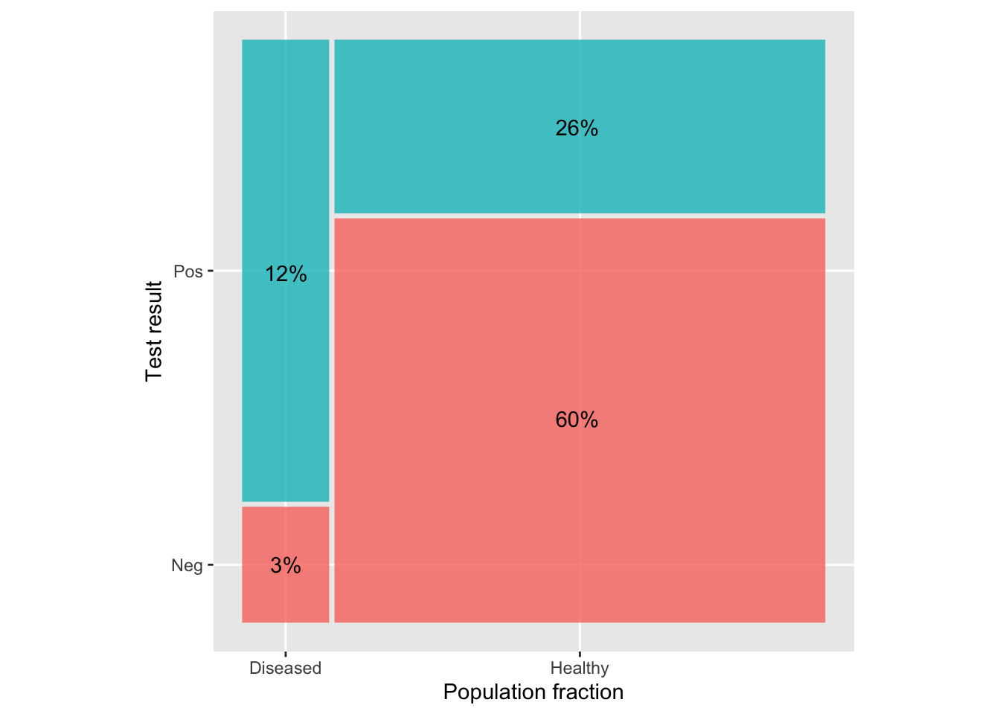

This week: Picking up on topics usually found in an introductory course, but which we haven’t worked with.
Highly opinionated view: We haven’t included them because they aren’t worth including. (Perhaps true from a strictly logical perspective.)
Consensus view: You will hear about these things even if there are better alternatives (which we have covered), so they should be included.
Two such topics from “Stat 101” (e.g. “AP Statistics”):
Hypothesis testing, more properly called “Null Hypothesis Testing.” (NHT)
general logic and calculation procedures for the p-value.
named statistical “tests,” e.g., t-test (three varieties!), p-test, z-test, chi-squared test, ANOVA (which is genuinely useful but not often in Stat 101).
Classical framework for statistical theory: population and population parameters vs samples and sample statistics.
Classical dogma: Probability does not apply to population parameters. They are what they are, even if we don’t know what they are.
Classical definition of statistical inference: “The process of using a sample to infer the properties of a population.”
The classical framework is like Aristotle’s Physics: “Everything moves to its rightful place. The rightful place for heavy objects is as close to the Earth as possible.”
Introducing Hypothesis testing
1926: Fisher introduces “significance testing” in “The Arrangement of Field Experiments”Journal of the Ministry of Agriculture of Great Britain33:503-513
The Null hypothesis is usually taken to be a statement like these:
“There is nothing worthwhile going on.”
“There is no connection between the response and explanatory variables.”
Setting: You are working with two groups, each of which has a mean (or proportion) of some response variable. “There is no difference between the group means (or proportions).”
Conducting a hypothesis test means to calculate from the data something called a p-value that is a number between 0 and 1.
In our framework from Lessons 34 and 35, a p-value is a likelihood: the probability of what we observed (e.g. a 10% increase in yield) given the Null hypothesis. Fisher suggested in his early paper, looking at previous years’ data “with uniform treatment” (no manure), the p-value is the fraction of years that produced a disparity of 10% or greater.
Example: Does the number of kids in a family play a role in determining child’s adult height?
lm(height ~ mother + father + sex + nkids, data=Galton) |>conf_interval(show_p =TRUE)
term
.lwr
.coef
.upr
p.value
(Intercept)
10.7000
16.2000
21.70000
0.000
mother
0.2600
0.3210
0.38200
0.000
father
0.3400
0.3980
0.45600
0.000
sexM
4.9300
5.2100
5.49000
0.000
nkids
-0.0972
-0.0438
0.00952
0.107
The Null hypothesis is that the nkids coefficient would be zero if we could collect a very large amount of data.
A coefficient “far from zero” is bad news for the Null. Worse news for the Null would be a coefficient even further from zero, e.g. -0.6 or +0.5 and so on.
The p-value is \({\cal L}_0(\text{obs or worse})\) [More precisely, \(p = \int_A{\cal L}_0(A)dA\) were A is the set of possible observations that are as “bad” as obs, or worse.
Interpreting the p-value: “Reject” or “Fail to reject”
A small p-value is bad news for the Null hypothesis. Conclusion: “Reject the Null.”
A big p-value provides support for the Null. But it equally well provides support for hypotheses that are non-Null but close to the Null. So we cannot say definitely that the Null is right. For example, it might be that our study was so badly done that it really has nothing to say. Conclusion: “Fail to reject the Null”
We need a definition for “small p-value.”
Conventionally, small means \(p<0.05\).
Suppose the Null is that “nothing interesting is going on” (e.g. nkids doesn’t factor into adult height). Then, “rejecting the Null” is practically synonymous with “something interesting is going on.”
Researchers calculate p-values. They usually hope for a small p-value, since this indicates that something interesting is going on, perhaps suitably interesting to be worth publishing.
Review of Lesson 35
We considered the development and application of a screening test.
Development (the “science” part of the work)
Gather 1000 subjects of whom about 50% have the condition and the rest don’t.
Apply the test to all the subjects getting a positive or negative result for each.
Calculate sensitivity and specificity.
The fraction of the diseased subjects who get a positive test is the sensitivity of the test.
The fraction of the healthy subjects who get a negative test is the specificity of the test.
This results in information reported in the following graph:

Translating to more general terms
Figure 1: Turning the graph from Lesson 35 upside-down to bring it into a mainstream graphical format.
Diseased vs. Healthy \(\longrightarrow\) H_a_ vs. H_0_ a.k.a. “Alternative” vs “Null”
In this framework, we can simplify the iconic graphic a lot:
Application
Apply the test to your patient, getting a positive or negative result.
Look up the prevalence of the disease in the relevant population. This is the prior probability for your patient.
Do the arithmetic to combine the three numbers—prevalence, sensitivity, specificity—to compute the posterior probability for your patient.
Calculation: - A = prior probability \(\times\) sensitivity - B = (1 - prior probability) \(\times\) (1-specificity) - consequently: posterior probability = A / (A + B)
Example from above graph: - A = 10% \(\times\) 90% = 9% - B = 90% \(\times\) 15.5% = 14% - consequently: posterior probability = 9 / (9 + 14) = 39%
Another formula for the posterior probability:
\[\underbrace{odds(H_a | \text{obs})}_{\Large\text{posterior for } H_a} = \underbrace{\left[\frac{{\cal L}_a(\text{obs})}{{\cal L}_0(\text{obs})} \right]}_{\Large\text{Likelihood ratio}}\ \times\ \underbrace{odds(H_a)}_{\Large\text{prior for } H_a}\]
The Bayesian framework is an excellent way to update a prior for either the Alternative hypothesis or a Null hypothesis. (The priors correspond one to the other: p(Alternative) = 1-p(Null).) There are even ways to put the model-fitting process into a Bayesian framework so that we get a posterior probability distribution on the effect size.
But sometimes we don’t have everything we need.
The classical formulation of statistics holds that a hypothesis should be fixed, there’s no such thing as a prior or posterior for a hypothesis.
The early formulations of “null hypothesis testing” did not include any role for an Alternative hypothesis. The mathematics of the Alternative were introduced in the late 1930s, but it was half a century before this started to be a standard part of teaching statistics. (And even then, it plays just a rump role in Stat 101.)
What does this leave us with?
\[\require{cancel}\cancel{\underbrace{odds(H_a | \text{obs})}_{\Large\text{posterior for } H_a}} = \underbrace{\left[\frac{\cancel{{\cal L}_a(\text{obs})}}{{\cal L}_0(\text{obs})} \right]}_{\Large\cancel{\text{Likelihood ratio}}}\ \times\ \cancel{\underbrace{odds(H_a)}_{\Large\text{prior for } H_a}}\] The only component that’s left is \({\cal L}_0(\text{obs})\).
The p-value
If “obs” is bad news for the Null hypothesis, then \({\cal L}_0(\text{obs})\) will be small.
But there is a situation where it might be small for other reasons: if there are lots of possible values for an observation, the probability of any specific one is going to tend to be small.
Patch for this problem: Include in the likelihood not just the observation itself, but any other observations that would be even more compellingly “bad” for the Null hypothesis.
p-value fallacies
1. Very small p-values, e.g. p < 0.0001.
Null = “nothing interesting is going on.”
Small p-value implies “not the Null,” that is “something interesting is going on.”
p-values can sometimes be tiny, tiny, tiny. Some people (wrongly) interpret this as “something really interesting is going on.”
2. “Significance” and practical importance
A century ago, the word “significant” was used as a synonym for \(p < 0.05\).
This was in the sense of what’s now the second definition for “significant”: “having a particular meaning; indicative of something.”
“Life’s but a walking shadow; a poor player, that struts and frets his hour upon the stage, and then is heard no more: it is a tale told by an idiot, full of sound and fury, signifying nothing.” —Shakespeare, Macbeth*
Many people interpret “statistically significant” using the sense more common today: “Sufficiently great or important to be worthy of attention; noteworthy.”
A much more accurate phrase is “statistically discernible.” But people like hearing that their results are “significant.”
Not small p-values, p > 0.05
Technically, the Null hypothesis is that the coefficient is zero.
Conventional wisdom might be that there is indeed something going on. In such a case, p > 0.05 might indeed be an interesting result and worth publishing. (Still has to be demonstrated that the study was able to reject the null if the conventional wisdom were right.)
Confidence intervals and p-values
Confidence intervals are better than p-values.
They reveal the extent of uncertainty and are stated in physically understandable units (e.g. effect size).
The p-value adds nothing to nothing to a confidence interval: it is just a statement of how far the interval is from zero.
Example:
model <-lm(height ~ mother + father + sex + nkids, data=Galton) conf_interval(model, show_p =TRUE) |>filter(term=="nkids")
term
.lwr
.coef
.upr
p.value
nkids
-0.0972
-0.0438
0.00952
0.107
Notice that 1) the confidence interval includes zero and 2) p > 0.05. These mean exactly the same thing.
The 95% confidence level corresponds to p = 0.05.
If we set the confidence level to the 1 minus p-value, the CI will just graze zero:
If confidence intervals are better than p-values, …
why do people use p-values?
p-values were invented first, about 35 years before confidence intervals.
The proponents of p-values were better known and strongly disparaged confidence intervals. It took decades for researchers to develop confidence in confidence intervals.
Change is hard. For instance, almost all statistical software produces by default a regression report that gives a p-value but not a confidence interval.
regression_summary(model) |>filter(term=="nkids")
term
estimate
std.error
statistic
p.value
nkids
-0.0438
0.0272
-1.61
0.107
Some researchers like being able to report very tiny p-values. They subscribe to the fallacy described above.